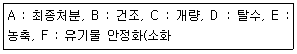
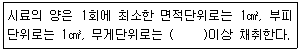
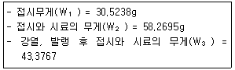
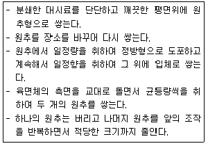
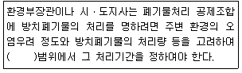
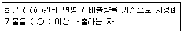

폐기물처리산업기사 (2019-09-21 기출문제)
1과목: 폐기물개론
1. 함수율 80%인 슬러지 500g을 완전건조 시켰을 때 건조된 슬러지 중량(g)은? (단, 슬러지의 비중=1.0)
- 100
- 200
- 300
- 400
(정답률: 70%)

2. 우리나라에서 가장 많이 발생하는 사업장 폐기물(지정폐기물)은?
- 분진
- 폐알카리
- 폐유 및 폐유기용지
- 폐합성 고분자화합물
(정답률: 77%)
3. 쓰레기의 입도를 분석하였더니 입도누적곡선 상의 10%(D10), 30%(D30), 60%(D60), 90%(D90)의 입경이 각각 2, 6, 15, 25mm이라면 곡률계수는?
- 15
- 7.5
- 2.0
- 1.2
(정답률: 63%)
4. 가연분 함량을 구하는 식으로 옳은 것은?
- 가연분(%)=100-불연성물질(%)-가연성물질(%)
- 가연분(%)=100-시료무게(%)-회분(%)
- 가연분(%)=100-수분(%)-회분(%)
- 가연분(%)=100-분자량(%)-회분(%)
(정답률: 77%)
5. 도시의 인구가 50000명이고 분뇨의 1인 1일당 발생량은 1.1L이다. 수거된 분뇨의 BOD농도를 측정하였더니 60000mg/L이었고, 분뇨의 수거율이 30%라고 할 때 수거된 분뇨의 1일 발생 BOD량(kg)은? (단, 분뇨의 비중=1.0 기준)
- 790
- 890
- 990
- 1190
(정답률: 64%)
6. 수거효율을 결정하기 위해서 흔히 사용되는 동적시간조사(time-motion study)를 통한 자료와 가장 거리가 먼 것은?
- 수거차량당 수거인부수
- 수거인부수의 시간당 수거 가옥수
- 수거인부의 시간당 수거톤수
- 수거톤당 인력 소요시간
(정답률: 65%)
7. 연질플라스틱과 종이류가 혼합된 폐기물을 파쇄하는데 효과적이고, 파쇄속도가 느리고 이물질의 혼입에 대해 취약하지만 파쇄물의 크기를 고르게 절단할 수 있는 파쇄기는?
- 전단파쇄기
- 충격파쇄기
- 압축파쇄기
- 해머밀
(정답률: 76%)
8. 함수율이 25%인 폐기물의 고형물 중의 가연성 함량은 30%이다. 건조중량기준의 가연성 물질 함량(%)은?
- 20%
- 30%
- 40%
- 50%
(정답률: 31%)
9. 분석을 위하여 축소, 분쇄, 균질 등의 목적으로 하는 시료의 축소방법 중 원추 4분법이 가장 많이 사용되는 이유로서 가장 적합한 것은?
- 원추를 쌓기 때문이다.
- 축소비율이 일정하기 때문이다.
- 한 번의 조작으로 시료가 축소되기 때문이다.
- 타 방법들이 공인되지 않았기 때문이다.
(정답률: 79%)
10. 파이프라인을 이용한 쓰레기 수송방법에 대한 설명으로 가장 거리가 먼 것은?
- 쓰레기 발생밀도가 낮은 곳에서 현실성이 있다.
- 잘못 투입된 물건을 회수하기가 곤란하다.
- 조대쓰레기는 파쇄, 압축 등의 전처리가 필요하다.
- 2.5km 이상의 장거리에서는 이용이 곤란하다.
(정답률: 71%)
11. 물질회수를 위한 선별방법 중 손선별에 관한 설명으로 옳지 않은 것은?
- 컨베이어 벨트를 이용하여 손으로 종이류, 플라스틱류, 금속류, 유리류 등을 분류한다.
- 작업효율은 0.5ton/manㆍhr 정도이다.
- 컨베이어 벨트의 속도는 일반적으로 약 9m/min 이하이다.
- 정확도가 떨어지고 폭발로 인한 위험에 노출되는 단점이 있다.
(정답률: 75%)
12. 트롭멜 스크린의 선별효율에 영향을 주는 인자가 아닌 것은?
- 체의 눈 크기
- 트롬멜 무게
- 경사도
- 회전속도(rpm)
(정답률: 77%)
13. 인구 3800명인 도시에서 하루동안 발생되는 쓰레기를 수거하기 위하여 용량 8m3인 청소 차량이 5대, 1일 2회 수거, 1일 근무시간이 8시간인 환경미화원이 5명 동원된다. 이 쓰레기의 적재밀도가 0.3ton/m3일 때 MHT값(manㆍhour/ton)은? (단, 기타 조건은 고려하지 않음)
- 1.38
- 1.42
- 1.67
- 1.83
(정답률: 56%)
14. 채취한 쓰레기 시료에 대한 성상 분석 절차는?
- 밀도 측정→물리적 조성→건조→분류
- 밀도 측정→물리적 조성→분류→건조
- 물리적 조성→밀도 측정→건조→분류
- 물리적 조성→밀도 측정→분류→건조
(정답률: 71%)
15. 우리나라 쓰레기의 배출특성에 대한 설명으로 가장 거리가 먼 것은?
- 계절적 변동이 심하다.
- 쓰레기의 발열량이 높다.
- 음식물 쓰레기 조성이 높다.
- 수분과 회분함량이 많다.
(정답률: 73%)
16. 폐기물 발생량 및 성상예측 시 고려되어야 할 인자가 아닌 것은?
- 소득수준
- 자원회수량
- 사용연료
- 지역습도
(정답률: 60%)
17. 지정폐기물과 관련된 설명으로 알맞은 것은?
- 모든 폐유기용제는 지정폐기물이다.
- 폐폭매 중에 코발트가 다량 포함되면 지정폐기물이다.
- 기름성분(엔진오일, 폐식용유 등)을 5% 이상 함유하면 지정폐기물이다.
- 6가크롬을 다량 함유하고 고형물함량이 5%미만인 도금공장 발생 공정오니는 지정폐기물이다.
(정답률: 56%)
18. 자력선별에서 사용하는 자력의 단위는?
- emf
- mV(미리 볼트)
- T(테슬라)
- F(파리데이)
(정답률: 68%)
19. 쓰레기 수거능을 판별할 수 있는 MHT라는 용어에 대한 가장 적절한 표현은?
- 수거인부 1인이 수거하는 쓰레기 톤수
- 수거인부 1인이 시간당 수거하는 쓰레기 톤수
- 1톤의 쓰레기를 수거하는데 소요되는 인부 수
- 1톤의 쓰레기를 수거하는데 수거인부 1인이 소요하는 총 시간
(정답률: 72%)
20. 폐기물 처리방법 중 에너지 혹은 자원회수 방법으로 가장 비경제적인 것은?
- 퇴비화
- 열 분해
- 혐기성 소화
- 호기성 소화
(정답률: 57%)
2과목: 폐기물처리기술
21. 처리용량이 20kL/day인 분뇨처리장에 가스저장탱크를 설계하고자 한다. 가스 저류기간을 3hr로 하고 생성가스량을 투입량의 8배로 가정한다면 가스탱크의 용량(m3)은? (단, 비중=1.0기준)
- 20
- 60
- 80
- 120
(정답률: 48%)
22. 비정상적으로 작동하는 조화조에 석회를 주입하는 이유는?
- 유기산균을 증가시키기 위해
- 효소의 농도를 증가시키기 위해
- 칼슘 농도를 증가시키기 위해
- pH를 높이기 위해
(정답률: 72%)
23. 연직 차수막 공법의 종류와 가장 거리가 먼 것은?
- 강널말뚝
- 어스 라이닝
- 굴착에 의한 차수시트 매설법
- 어스 댐 코아
(정답률: 63%)
24. 다음 중 열회수시설이 아닌 것은?
- 절탄기
- 과열기
- SCR
- 공기예열기
(정답률: 58%)
25. 오염된 토양의 처리를 위해 고형화 처리 시 토양 1m3당 고형화재의 첨가량(kg)은?
- 100
- 150
- 200
- 250
(정답률: 46%)
26. 효과적으로 퇴비화를 진행시키기 위한 가장 직접적인 중요 인자는?
- 온도
- 함수율
- 교반 및 공기공급
- C/N비
(정답률: 69%)
27. 매립지의 구분방법으로 옳지 않은 것은?
- 매립구조에 따라 혐기성, 혐기성위생, 개량혐기성위생, 준호기성, 호기성 매립으로 구분한다.
- 매립방법에 따라 불량, 친환경, 안전매립으로 구분한다.
- 매립위치에 따라 육상, 해안매립으로 구분한다.
- 위생매립(Cell 공법)은 도랑식, 경사식, 지역식 매립으로 구분한다.
(정답률: 60%)
28. 유해 폐기물을 고화 처리하는 방법 중 피막형성법에 관한 설명으로 옳지 않은 것은?
- 낮은 혼합률(MR)을 가진다.
- 에너지 소요가 작다.
- 화재 위험성이 있다.
- 침출성이 낮다.
(정답률: 42%)
29. 메탄올(CH3OH) 8kg을 완전 연소하는데 필요한 이론공기량(Sm3)은? (단, 표준상태 기준)
- 35
- 40
- 45
- 50
(정답률: 53%)
30. 분뇨를 혐기성 소화방식으로 처리하기 위하여 직경 10m, 높이 6m의 소화조를 시설하였다. 분뇨주입량을 1일 24m3으로 할 때 소화조 내 체류시간(day)은?
- 약 10
- 약 15
- 약 20
- 약 25
(정답률: 42%)
31. 슬러지에서 고액분리 약품이 아닌 것은?
- 알루미늄염
- 염소
- 철염
- 석회카바이트
(정답률: 45%)
32. 분뇨의 악취발생 물질에 들어가지 않는 것은?
- Skatole 및 Indole
- CH4와 CO2
- NH3와 H2S
- R-SH
(정답률: 66%)
33. 소각로에서 NOx 배출농도가 270ppm, 산소 배출농도가 12%일 때 표준산소(6%)로 환산한 NOx농도(ppm)는?
- 120
- 135
- 162
- 450
(정답률: 48%)
34. 함수율 99%의 잉여슬러지 30m3를 농축하여 함수율 95%로 했을 때 슬러지 부피(m3)는? (단, 비중=1.0 기준)
- 10
- 8
- 6
- 4
(정답률: 61%)
35. 폐산의 처리 방법 중 배소법에 관한 설명은?
- 폐염산을 고온로 내로 공급하여 수분의 증발, 염화철의 분해를 이용하여 생성되는 염화수소를 염산으로 회수하는 방법
- 폐산 중에 쇠부스러기를 가해서 반응시켜 황산철로 한 후 냉각시켜 FeSO4ㆍ7H2O를 분리하는 방법
- 농황산을 농축하여 30~97%의 황산을 회수하여 황산철 1수염을 정출 분리하는 방법
- 폐산을 냉각하여 염을 석출 분리하는 방법
(정답률: 51%)
36. 매립지에서 최소한의 환기설비 또는 가스대책 설비를 계획하여야 하는 경우와 가장 거리가 먼 것은?
- 발생가스의 축적으로 덮개설비에 손상이 갈 우려가 있는 경우
- 식물 식생의 과다로 지중 가스 축적이 가중되는 경우
- 유독가스 방출될 우려가 있는 경우
- 매립지 위치가 주변개발지역과 인접한 경우
(정답률: 72%)
37. 유기물(포도당, C6H12O6) 1kg을 혐기성소화시킬 때 이론적으로 발생되는 메탄량(kg)은?
- 약 0.09
- 약 0.27
- 약 0.73
- 약 0.93
(정답률: 57%)
38. 매립지 위치선정 시 적당한 곳은?
- 흡수범람지역
- 습지대
- 단층지역
- 지하수위 낮은 곳
(정답률: 65%)
39. 매립지의 침출수 수질을 결정하는 가장 큰 요인은?
- 폐기물의 매립량
- 폐기물의 조성
- 매립방법
- 강우량
(정답률: 55%)
40. 슬러지를 최종 처분하기 위한 가장 합리적인 처리공정 순서는?

- E-F-D-C-B-A
- E-D-F-C-B-A
- E-F-C-D-B-A
- E-D-C-F-B-A
(정답률: 61%)
3과목: 폐기물 공정시험 기준(방법)
41. 자외부 파장범위에서 일반적으로 사용하는 흡수셀의 재질은?
- 유리
- 석영
- 플라스틱
- 백금
(정답률: 70%)
42. 원자흡수분광광도법에서 사용되는 불꽃의 용도는?
- 원자의 여기화(Excitation)
- 원자의 증기화(Vaporization)
- 원자의 이온화(Ionization)
- 원자화(Atomization)
(정답률: 40%)
43. 석면(편광현미경법)의 시료 채취 양에 관한 내용으로 ()에 옳은 것은?

- 1g
- 2g
- 3g
- 4g
(정답률: 61%)
44. 시안(CN)을 자외선/가시선분광법으로 분석할 때 시안(CN)이온을 염화시안으로 하기 위해 사용하는 시약은?
- 염산
- 클로라민-T
- 염화나트륨
- 염화제2철
(정답률: 60%)
45. 시료 채취방법에 관한 내용 중 틀린 것은?
- 시료의 양은 1회에 100g 이상 채취한다.
- 채취된 시료는 0~4℃ 이하의 냉암소에서 보관하여야 한다.
- 폐기물이 적재되어 있는 운반차량에서 현장시료를 채취할 경우에는 적재 폐기물의 성상이 균일하다고 판단되는 깊이에서 현장시료를 채취한다.
- 대형의 콘크리트 고형화물로써 분쇄가 어려운 경우 같은 성분의 물질로 대체할 수 있다.
(정답률: 65%)
46. 이물질이 들어가거나 또는 내용물이 손실되지 아니하도록 보호하는 용기는?
- 밀폐용기
- 기밀용기
- 밀봉용기
- 차광용기
(정답률: 65%)
47. 폐기물공정시험기준 중 성상에 따른 시료 채취방법으로 가장 거리가 먼 것은?
- 폐기물 소각시설 소각재란 연소실 바닥을 통해 배출되는 바닥재와 폐열보일러 및 대기오염 방지시설을 통해 배출되는 비산재를 말한다.
- 공정상 소각재에 물을 분사하는 경우를 제외하고는 가급적 물을 분사한 후에 시료를 재취한다.
- 비산재 저장소의 경우 낙하루 밑에서 채취하고, 운반차량에 적재된 소각재는 적재차량에서 채취하는 것을 원칙으로 한다.
- 회분식 연소방식 반출설비에서 채취하는 소각재는 하루 동안의 운전 횟수에 따라 매 운전시마다 2회 이상 채취하는 것을 원칙으로 한다.
(정답률: 70%)
48. 용액 100g 중 성분용량(mL)을 표시하는 것은?
- W/V%
- V/V%
- V/W%
- W/W%
(정답률: 57%)
49. 기체크로마토그래프-질량분석법에 따른 유기인 분석방법을 설명한 것으로 틀린 것은?
- 운반기체는 부피백분율 99.999% 이상의 헬륨을 사용한다.
- 질량분석기는 자기장형, 사중극자형 및 이온 트랩형 등의 성능을 가진 것을 사용한다.
- 질량분석기의 이온화방식은 정자충격법(EI)을 사용하며 이온화에너지는 35~70eV을 사용한다.
- 질량분석기의 정량분석에는 매트릭스 검출법을 이용하는 것이 바람직하다.
(정답률: 57%)
50. 강열감량 시험에서 얻어진 다음 데이터로부터 구한 강열감량(%)은?

- 43.68
- 53.68
- 63.68
- 73.68
(정답률: 59%)
51. 기체크로마토그래피법에 사용되고 있는 전자포획형 검출기(ECD)로 선택적으로 검출할 수 있는 물질이 아닌 것은?
- 유기할로겐화합물
- 니트로화합물
- 유기금속화합물
- 유황화합물
(정답률: 60%)
52. 폐기물 공정시험방법의 총칙에서 규정하고 있는 사항 중 옳지 않은 것은?
- 온도의 영향이 있는 것의 판정은 표준온도를 기준으로 한다.
- 방울수라 함은 20℃에서 정제수 20 방울을 적하할 때 그 부피가 약 1mL가 되는 것을 말한다.
- 액상 폐기물이라 함은 고형물의 함량이 10% 미만인 것을 말한다.
- 약이라 함은 기재된 양에 대하여 ±10% 이상의 차가 있어서는 안된다.
(정답률: 63%)
53. 원자흡수분광분석 시 장치나 불꽃의 성질에 기인하여 일어나는 간섭으로 옳은 것은?
- 분광학적 간섭
- 물리적 간섭
- 화학적 간섭
- 이온화 간섭
(정답률: 52%)
54. 총칙에서 규정하고 있는 ‘함침성 고상폐기물’의 정의로 옳은 것은?
- 종이, 목재 등 수분을 흡수하는 변압기 내부 부재(종이, 나무와 금속이 서로 혼합되어 분리가 어려운 경우를 포함)를 말한다.
- 종이, 목재 등 수분을 흡수하는 변압기 내부 부재(종이, 나무와 금속이 서로 혼합되어 분리가 어려운 경우를 제외)를 말한다.
- 종이, 목재 등 기름을 흡수하는 변압기 내부 부재(종이, 나무와 금속이 서로 혼합되어 분리가 어려운 경우를 포함)를 말한다.
- 종이, 목재 등 기름을 흡수하는 변압기 내부 부재(종이, 나무와 금속이 서로 혼합되어 분리가 어려운 경우를 제외)를 말한다.
(정답률: 57%)
55. 수은을 원자흡수분광광도법(환원기화법)으로 측정할 때 정밀도(RSD)는?
- ±10%
- ±15%
- ±20%
- ±25%
(정답률: 51%)
56. 다음 설명하는 시료의 분할채취방법은?

- 구획법
- 교호삽법
- 원추 4분법
- 분할법
(정답률: 63%)
57. 원자흡수분광광도법으로 크롬을 정량할 때 전처리조작으로 KMnO4를 사용하는 목적은?
- 철이나 니켈금속 등 방해물질을 제거하기 위하여
- 시료 중의 6가 크롬을 3가 크롬으로 환원하기 위하여
- 시료 중의 3가 크롬을 6가 크롬으로 산화하기 위하여
- 디페닐키르바지드와 반응성을 높이기 위하여
(정답률: 60%)
58. 수산화나트륨(NaOH) 10g을 정제수 500mL에 용해시킨 용액의 농도(N)는? (단, 나트륨 원자량=23)
- 0.5
- 0.4
- 0.3
- 0.2
(정답률: 46%)
59. 4℃의 물 500mL에 순도가 75%인 시약용 납을 5mg을 녹였을 때 용약의 납 농도(ppm)는?
- 2.5
- 5.0
- 7.5
- 10.0
(정답률: 48%)
60. 유도결합플라스마-원자발광분광법에 의한 카드뮴 분석방법에 관한 설명으로 틀린 것은?
- 정량범위는 사용하는 장치 및 측정조건에 따라 다르지만 330nm에서 0.004~0.3mL 정도이다.
- 아르곤가스는 액화 또는 압축 아르곤으로서 99.99V/V% 이상의 순도를 갖는 것이어야 한다.
- 시료용액의 발광각도를 측정하고 미리 작성한 검정곡선으로부터 카드뮴의 양을 구하여 농도를 산출한다.
- 검정곡선 작성 시 카드뮴 표준용액과 질산, 염산, 정제수가 사용된다.
(정답률: 52%)
4과목: 폐기물 관계 법규
61. 폐기물 통계 조사 중 폐기물 발생원 등에 관한 조사의 실시 주기는?
- 3년
- 5년
- 7년
- 10년
(정답률: 53%)
62. 1회용품의 품목이 아닌 것은?
- 1회용 컵
- 1회용 면도기
- 1회용 물티슈
- 1회용 나이프
(정답률: 59%)
63. 변경허가를 받지 아니하고 폐기물처리업의 허가사항을 변경한 자에게 주어지는 벌칙은?
- 2년 이하의 징역 또는 2천만원 이하의 벌금
- 3년 이하의 징역 또는 3천만원 이하의 벌금
- 5년 이하의 징역 또는 5천만원 이하의 벌금
- 7년 이하의 징역 또는 7천만원 이하의 벌금
(정답률: 48%)
64. 폐기물처리업자 등이 보존하여야 하는 폐기물 발생, 배출, 처리상황 등에 관한 내용을 기록한 장부의 보존 기간(최종기재일 기준)으로 옳은 것은?
- 1년
- 2년
- 3년
- 5년
(정답률: 74%)
65. 방치폐기물의 처리기간에 대한 내용으로 ()에 옳은 내용은? (단, 연장 기간은 고려하지 않음)

- 3개월
- 2개월
- 1개월
- 15일
(정답률: 58%)
66. 사업장폐기물의 발생억제를 위한 감량지침을 지켜야 할 업종과 규모로 ()에 맞는 것은?

- ㉠ 1년, ㉡ 100톤
- ㉠ 3년, ㉡ 100톤
- ㉠ 1년, ㉡ 500톤
- ㉠ 3년, ㉡ 500톤
(정답률: 66%)
67. 폐기물의 국가간 이동 및 그 처리에 관한 법률은 폐기물의 수출ㆍ수입 등을 규제함으로써 폐기물의 국가간 이동으로 인한 환경오염을 방지하고자 제정되었는데, 관련된 국제적인 협약은?
- 기후변화협약
- 바젤협약
- 몬트리올의정서
- 비엔나협약
(정답률: 70%)
68. 의료폐기물 보관의 경우 보관창고, 보관장소 및 냉장시설에는 보관 중인 의료폐기물의 종류, 약 및 보관기간 등을 확인할 수 있는 의료폐기물 보관 표지판을 설치하여야 한다. 이 표지판 표지의 색깔로 옳은 것은?
- 노란색 바탕에 검은색 선과 검은색 글자
- 노란색 바탕에 녹색 선과 녹색 글자
- 흰색 바탕에 검은색 선과 검은색 글자
- 흰색 바탕에 녹색 선과 녹색 글자
(정답률: 66%)
69. 지정폐기물(의료폐기물은 지외) 보관창고에 설치해야 하는 지정폐기물의 종류, 부관가능 용량, 취급 시 주의사항 및 관리책임자 등을 기재한 표지판 표지의 규격 기준은? (단, 드럼 등 소형용기에 붙이는 경우 제외)
- 가로 60cm 이상×세로 40cm 이상
- 가로 80cm 이상×세로 60cm 이상
- 가로 100cm 이상×세로 80cm 이상
- 가로 120cm 이상×세로 100cm 이상
(정답률: 68%)
70. 폐기물관리법에 적용되지 아니하는 물질에 대한 기준으로 틀린 것은?
- 물환경보전법에 따른 수질 오염 방지시설에 유입되거나 공공수역으로 배출되는 폐수
- 원자력안전법에 따른 방사성 물질과 이로 인하여 오염된 물질
- 용기에 들어 있는 기체상태의 물질
- 하수도법에 따른 하수ㆍ분뇨
(정답률: 66%)
71. 시ㆍ도지사가 폐기물처리 신고자에게 처리금지 명령을 하여야 하는 경우, 천재지변이나 그 밖의 부득이한 사유로 해당 폐기물처리를 계속하도록 할 필요가 인정되는 경우에 그 처리금지를 갈음하여 부과할 수 있는 과징금의 최대 액수는?
- 2천만원
- 5천만원
- 1억원
- 2억원
(정답률: 47%)
72. 대통령령으로 정하는 폐기물처리시설을 설치 운영하는 자 중에 기술관리인을 임명하지 아니하고 기술관리 대행 계약을 체결하지 아니한 자에 대한 과태료 처분기준은?
- 1천만원 이하
- 5백만원 이하
- 3백만원 이하
- 2백만원 이하
(정답률: 66%)
73. 폐기물 처분시설 또는 재활용 시설 중 의료폐기물을 대상으로 하는 시설의 기술관리인 자격으로 틀린 것은?
- 위생사
- 임상병리사
- 산업위생지도사
- 폐기물처리산업기사
(정답률: 65%)
74. 환경부장관이나 시ㆍ도지사로부터 과징금 통지를 받은 자는 통지를 받은 날부터 며칠 이내에 과징금을 부과권자가 정하는 수납기관에 납부하여야 하는가?
- 15일
- 20일
- 30일
- 60일
(정답률: 56%)
75. 다음 용어에 대한 설명으로 틀린 것은?
- “재활용” 이란 에너지를 회수하거나 회수할 수 있는 상태로 만들거나 폐기물을 연료로 사용하는 활동으로서 환경부령으로 정하는 활동
- “지정폐기물”이란 사업장폐기물 중 페유ㆍ폐산 등 주변 환경을 오염시킬 수 있거나 의료폐기물 등 인체에 위해를 줄 수 있는 해로운 물질로서 대통령령으로 정하는 폐기물
- “폐기물처리시설”이란 폐기물의 중간처분시설 및 최종처분시설로서 대통령령으로 정하는 시설
- “폐기물감량화시설”이란 생산 공정에서 발생하는 폐기물의 양을 줄이고, 사업장 내 재활용을 통하여 폐기물 배출을 최소화하는 시설로서 대통령령으로 정하는 시설
(정답률: 49%)
76. 주변지역 영향 조사대상 폐기물처리시설에 관한 기준으로 옳은 것은?
- 1일 처리능력 30톤 이상인 사업장 폐기물 소각시설
- 1일 처리능력 10톤 이상인 사업장 폐기물 고온소각시설
- 매립면적 1만 제곱미터 이상의 사업장 지정폐기물 매립시설
- 매립면적 3만 제곱미터 이상의 사업장 일반폐기물 매립시설
(정답률: 68%)
77. 폐기물처리업의 변경허가를 받아야 할 중요시항에 관한 내용으로 틀린 것은?
- 매립시설 제방의 증ㆍ개축
- 허용보관량의 변경
- 임시차량의 중차 또는 운반차량의 감차
- 주차장 소재지의 변경(지정폐기물을 대상으로 하는 수집ㆍ운반업만 해당한다.)
(정답률: 54%)
78. 환경부령으로 정하는 폐기물처리시설의 설치를 마친 자는 환경부령으로 정하는 검사기관으로부터 검사를 받아야 한다. 음식물유 폐기물 처리시설의 검사기관으로 옳은 것은? (단, 그 밖에 환경부장관이 정하여 고시하는 기관 제외)
- 한국산업연구원
- 보건환경연구원
- 한국농어촌공사
- 한국환경공단
(정답률: 68%)
79. 폐기물 처리업의 업종구분과 영업내용의 범위를 벗어나는 영업을 한 자에 대한 벌칙 기준은?
- 1년 이하의 징역이나 1천만원 이하의 벌금
- 2년 이하의 징역이나 2천만원 이하의 벌금
- 3년 이하의 징역이나 3천만원 이하의 벌금
- 5년 이하의 징역이나 5천만원 이하의 벌금
(정답률: 56%)
80. 환경부령으로 정하는 매립시설의 검사기관으로 틀린 것은?
- 한국건설기술연구원
- 한국환경공단
- 한국농어촌공사
- 한국산업기술시험원
(정답률: 60%)